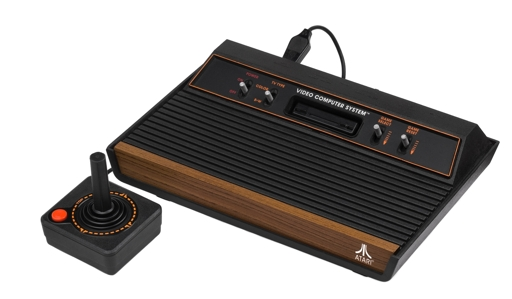
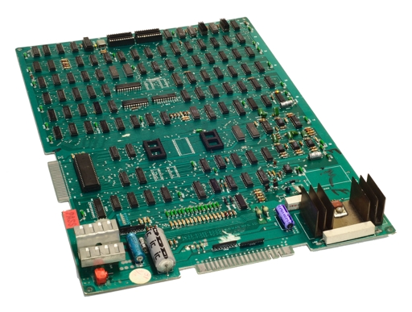

Atari 2600
Learn how to program the Atari 2600 with dozens of fully commented examples. Our 6502 assembler runs as you type and flags any errors. We've got debugging tools too; single step through your code and use our CPU Cycle Analyzer to develop that perfect Stella kernel.
Arcade Games
You can develop your own games on classic arcade game hardware, using our in-browser C compiler targeting the Z80 CPU. Platforms include VIC Dual, Midway 8080, Galaxian/Scramble, Atari Vector, and Williams. 
Hardware Design
Software not enough for you?
Use our
Verilog
compiler to design a 8-bit game platform from scratch.
We'll run your design in real time in the browser, displaying the output on a simulated CRT.
Plenty of examples are included to teach logic programming.
The book even shows you how to synthesize your code to the
Lattice iCE Stick FPGA
and connect to a legacy CRT or TV.
Learn More With a Book!

Making Games For The Atari 2600
The Atari 2600 was released in 1977, and now there's finally a book about how to write games for it! You'll learn about the 6502 CPU, NTSC frames, scanlines, cycle counting, players, missiles, collisions, procedural generation, pseudo-3D, and more. While using the manual, take advantage of our Web-based IDE to write 6502 assembly code, and see your code run instantly in the browser. We'll cover the same programming tricks that master programmers used to make classic games. Create your own graphics and sound, and share your games with friends!

Making 8-Bit Arcade Games in C
With this book, you'll learn all about the hardware of Golden Age 8-bit arcade games produced in the late 1970s to early 1980s. We'll learn how to use the C programming language to write code for the Z80 CPU. The following arcade platforms are covered: * Midway 8080 (Space Invaders) * VIC Dual (Carnival) * Galaxian/Scramble (Namco) * Atari Color Vector * Williams (Defender, Robotron) We'll describe how to create video and sound for each platform. Use the online 8bitworkshop IDE to compile your C programs and play them right in the browser!
Designing Video Game Hardware in Verilog
This book attempts to capture the spirit of the ''Bronze Age'' of video games, when video games were designed as circuits, not as software. We'll delve into these circuits as they morph from Pong into programmable personal computers and game consoles. Instead of wire-wrap and breadboards, we'll use modern tools to approximate these old designs in a simulated environment from the comfort of our keyboards. At the end of this adventure, you should be well-equipped to begin exploring the world of FPGAs, and maybe even design your own game console. You'll use the 8bitworkshop.com IDE to write Verilog programs that represent digital circuits, and see your code run instantly in the browser.
Supported Platforms
Atari 2600
In 1977, the Atari 2600 popularized the idea of programmable video game consoles. Its 6502 CPU and mere 128 bytes of RAM powered hundreds of classic games. Fiendishly difficult to program, developers learned plenty of tricks for "racing the beam" to generate displays far beyond what its designers believed possible.
VIC Dual
The VIC Dual system was one of the first CPU-based arcade platforms from Gremlin Industries, later acquired by Sega. It used a Z80 CPU and a character-based display with simple RGB colors. "Carnival" is probably the best-remembered game on this platform.
Midway 8080
The Midway 8080 system powered Gun Fight, the first CPU-based arcade game. Later, it would also run the immensely popular Space Invaders. It used a Z80 and a simple black-and-white frame buffer backed by 7 KB of RAM, a huge amount for the time.


Galaxian/Scramble
Galaxian pushed the limit of video game designs in 1979, with a 3 MHz Z80 and RGB color graphics with hardware sprites overlapping a scrolling background. This hardware was licensed for many classics like Scramble and Frogger.
Atari Vector
Atari's black-and-white vector games like Lunar Lander and Asteroids took the industry by storm, later leading to color vector games like Tempest. Powered by a 6502 CPU and custom state machine, they could draw points and lines at a resolution far beyond the CRT-based games of the era.
Williams
The Williams games like Defender, Robotron, and Joust were powered by plenty of hardware. A 36 KB framebuffer gave it 16-color graphics, and a custom bit blitter chip moved pixels around quickly. A separate CPU powered its unique sound effects.